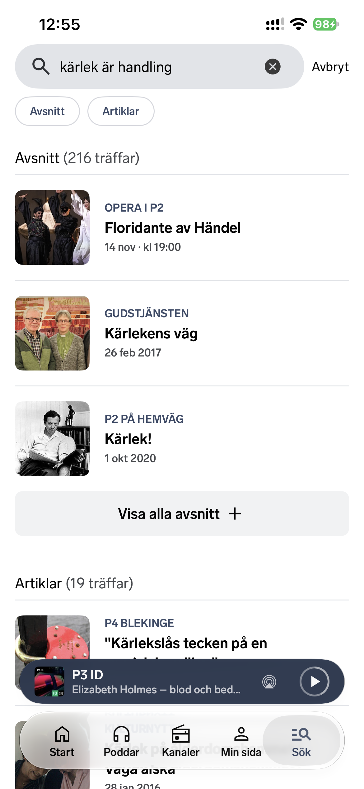
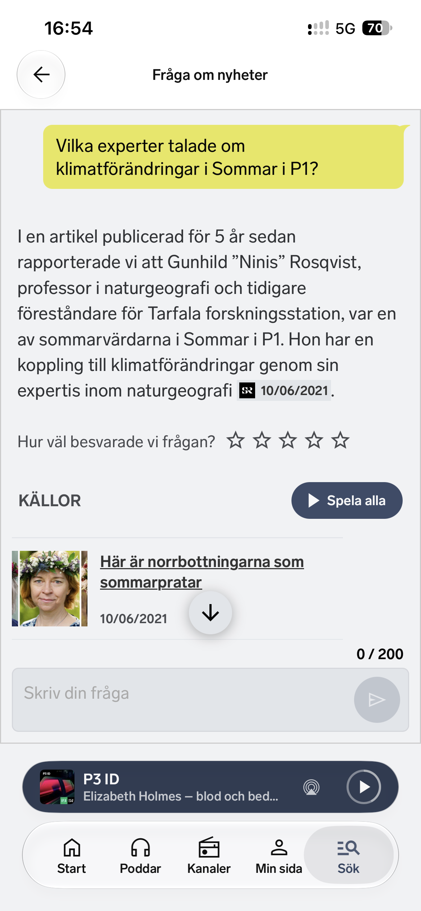

Minns du vad de sa, men inte var?
Ett examensarbete i dataanalys och maskininlärning som gör SR:s poddar och program sökbara på ämnesnivå: skriv vad du letar efter och hamna direkt i rätt segment, i stället för att lyssna igenom timmar av ljud.
Idag och med vårt förslag
I ett avsnitt av Morgonpasset i P3 säger en av programledarna att kärlek enligt bell hooks är handling, inte känsla. Vi sökte på "kärlek är handling".

Träffar, men inte det vi letade efter...
"kärlek är handling"
Det här är ett riktigt resultat från vår demo. Prova själv i telefonen nedan.
Prova idén
Sök
Byggd på ett riktigt avsnitt av Morgonpasset i P3 (1 h 33 min), transkriberat med KB:s svenska Whisper-modell och uppdelat i 21 ämnessegment. Uppdelningen är föreslagen av AI och kontrollerad för hand i den här versionen. Att låta en AI göra det för varje avsnitt blir dyrt i längden och svårt att kontrollera. En egen modell som gör det automatiskt är fråga 1 i exjobbet.
Så fungerar det
Sökningen letar i det som faktiskt sades, inte bara i titlar. Varje träff är ett ämnessegment, inte ett helt avsnitt, och spelas upp från rätt minut.
Byt mellan Exakta ord och Betydelse. Ordet "datorspel" sägs aldrig i avsnittet, så exakt sökning ger inga träffar. Betydelsesökningen hittar ändå segmenten om GTA 6 och Counter-Strike. I demon är den förenklad med handskrivna synonymlistor. Att bygga riktig semantisk sökning och mäta skillnaden ordentligt är fråga 2 i exjobbet.
Träffarna i avsnittet
Varje block är ett ämnessegment. Färgen visar hur säker matchningen är: grön hög, blå medel, grå låg.
Problemet
SR har ett enormt arkiv av poddar och program, men det går bara att söka på titlar och beskrivningar. Vi lyssnar dagligen på SR, men har saknat ett sätt att söka i vad som faktiskt sägs i poddar och program. Det som faktiskt sägs i ett avsnitt är osynligt. Den som minns att ett ämne togs upp i Studio Ett för ett år sedan har ingen chans att hitta det utan att lyssna igenom timmar av ljud. SR:s nya AI-nyhetssök täcker idag artiklar, men poddar och program ingår inte än. SR transkriberar redan Sommar i P1, och nyhetssöket kan svara på frågor om programmet, men bara utifrån artiklar som skrivits om det. När vi frågade vilka experter som pratat om klimatförändringar i Sommar i P1 fick vi en nyhetsartikel från 2021 om en av sommarvärdarna, men inte vad hon sa eller var i programmet hon sa det. Texten finns, men den går inte att söka i än. För att kunna söka i dem behöver långa program först delas upp i ämnesavsnitt – och det är det vi vill lösa.
Både lyssnare och redaktörer skulle ha nytta av att kunna söka i innehållet: lyssnare för att hitta det de är intresserade av, redaktörer för att hitta arkivmaterial och följa en fråga över tid.

Testat 23 november 2026. Svaret bygger på en artikel om programmet, inte på det som sades i det.
Vi bygger vidare på Pick and mix
SR byggde 2021 prototypen Pick and mix podcast segmenter på Studio Ett: avsnitten delades upp i ämnessegment, transkriberades och gjordes sökbara, med likhetssökning och tidslinjer. Två saker blev dock kvar på demostadiet:
Uppdelningen kontrollerades för hand
Den automatiska uppdelningen med hjälp av signaturen var bara ett proof of concept. Utan automatisk uppdelning går det inte att skala upp.
Ingen mätning av kvaliteten
Hur ofta hittar sökningen rätt? Betyder matchningsfärgerna något? Det behöver vara känt innan något når lyssnarna.
Bättre verktyg för svenska
Taligenkänning som KB:s svenska Whisper-modell och nyare svenska språkmodeller gör allt detta mycket mer realistiskt idag.
Grundidén: Jinglar och signaturer mellan inslagen, som "P3, Sveriges Radio" i Morgonpasset eller signaturen i Studio Ett, ger oss gratis facit. Genom att hitta dem automatiskt får vi tusentals ämnesgränser att träna på, med lite manuellt arbete. Sedan tränar vi en modell som hittar ämnesbyten utifrån texten, och därför fungerar även för program utan jinglar.
Frågeställningar och metod
Automatisk ämnesuppdelning
Hur bra hittar en finjusterad svensk språkmodell ämnesbyten i transkriberat tal, och fungerar den på program den inte tränats på?
Utvärdering: Pk, WindowDiff, F1 med tidstolerans
Bästa sökmetoden
Ordsökning, semantisk sökning eller en kombination? Hjälper det att finjustera modellen på SR:s egen data?
Utvärdering: nDCG, recall, signifikanstest
Fel i taligenkänningen
Hur mycket försämrar transkriberingsfel sökningen, särskilt för namn och ortnamn?
Utvärdering: felanalys per ordtyp
Modellen: en finjusterad svensk BERT i PyTorch
Vi tränar en svensk språkmodell, KB-BERT, att känna igen ämnesbyten. Modellen läser texten före och efter varje punkt i transkriptet och svarar med en sannolikhet för att ett nytt ämne börjar där.
class AmnesbyteModell(nn.Module):
def __init__(self, namn="KB/bert-base-swedish-cased"):
super().__init__()
self.bert = AutoModel.from_pretrained(namn)
self.huvud = nn.Linear(self.bert.config.hidden_size, 1)
def forward(self, input_ids, attention_mask):
# [CLS] text före [SEP] text efter [SEP]
ut = self.bert(input_ids=input_ids, attention_mask=attention_mask)
return self.huvud(ut.last_hidden_state[:, 0]).squeeze(-1)
# ämnesbyten är ovanliga, så de viktas upp i förlusten
forlust = nn.BCEWithLogitsLoss(pos_weight=torch.tensor(20.0))Obalanserad data
Bara ungefär 1 av 50 punkter är ett ämnesbyte. Vi hanterar det med viktad förlust och smart urval av träningsexempel.
Långa sammanhang
BERT ser ungefär 512 tokens åt gången. Nästa steg är en hierarkisk modell: meningsvektorer och ett transformerlager över hela avsnittet.
Etiketter och data
Facit kommer från jinglar och manuell uppdelning. Med cirka 20 ämnesbyten per avsnitt ger 50–100 avsnitt 1 000–2 000 positiva exempel.
Ärlig jämförelse
Modellen ställs mot enklare baslinjer, TextTiling och logistisk regression, med standardmåtten Pk och WindowDiff.
Preliminär tidsplan, 20 veckor
Vad SR får ut av det
Beslutsunderlag
Siffror på hur bra uppdelning och sökning fungerar, och vilken metod som är bäst för SR:s material.
Kod och metod som går att återanvända
En pipeline från ljud till sökbara segment, dokumenterad så att SR kan bygga vidare.
Ett steg närmare lyssnarna
Det som krävs innan sökning i innehållet kan bli en funktion i appen.
Vad vi behöver från SR: tillgång till ljud från ett par hundra avsnitt, gärna koden och datan från 2021, och några timmar från en handledare för lite vägledning.
Om oss
Demon ovan tog vi fram med hjälp av AI-verktyg: transkribering med KB:s Whisper, en ämnesuppdelning som AI föreslog och vi kontrollerade för hand, och en förenklad betydelsesökning. Den visar idén. I exjobbet bygger och utvärderar vi den riktiga modellen.
Förutom att vi både är trogna SR fans, arbetar vi även bra ihop. Vi har skrivit kandidatarbetet ihop, så vi vet redan hur vi fungerar tillsammans: Ebba driver arbetet framåt, Alice har ett öga för detaljer. Vi har båda läst Search Engines and Information Retrieval på KTH, där vi byggde personaliserad sökning, och byggt och validerat ML-modeller som Junior Quantitative Analysts på SEB.
Förslaget är en utgångspunkt, och vi formar gärna upplägget efter vad som är mest användbart för SR. Vi kan börja i januari 2027 och hörs gärna för att prata vidare.
Alice Asmundsson
Genom mina studier har jag arbetat med statistisk modellering och maskininlärning, och jag tycker särskilt om att undersöka hur olika metoder kan användas för att hitta mönster och dra slutsatser ur komplexa datamängder.
Ebba Löwenberg
På SEB byggde jag maskininlärningsmodeller som uppskattade vad en affär var värd på ungefär halva tiden mot det gamla programmet, och testade dem tills jag visste var de slutade fungera. Jag gillar att ta en idé hela vägen till något som faktiskt fungerar.
Jag intervjuades också i SR om datorer i skolan för tolv år sedan. Nu vill jag ge ett bättre svar på hur tekniken kan användas.
Kontakt
Alice Asmundsson
asmundssonalice@gmail.com
+46 70-775 80 08
Ebba Löwenberg
ebbalw@gmail.com
+46 70-697 44 19